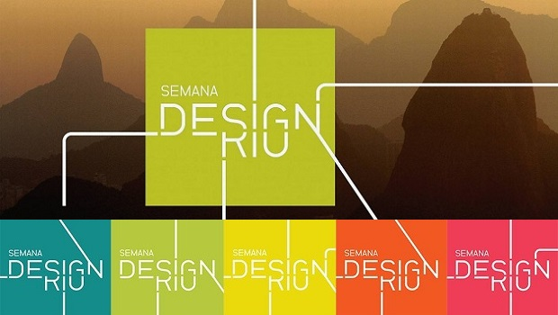

Pode ser feita até o dia 1º de outubro a inscrição de projetos para o "Concurso Semana Design Rio". O certame convida os estudantes universitários a pensarem a cidade do Rio de Janeiro, propondo novas ideias e soluções nos temas "Mover", "Sustentar", "Habitar" e "Brincar". O evento é parte da "Semana Design Rio 2014", que acontecerá de 5 a 9 de novembro, no Jockey Club. Os projetos devem ser factíveis e exequíveis com os recursos financeiros e tecnológicos atualmente existentes. Os trabalhos podem ser feitos por grupos de até três alunos e devem ser orientadas por um professor. Embora os alunos de graduação, em design, arquitetura e urbanismo, sejam o foco do concurso, podem se inscrever também alunos de pós-graduação e extensão das mesmas áreas. Os três primeiros colocados receberão, respectivamente, R$ 9.000,00, R$ 6.000,00 e R$ 3.000,00, além de troféus. Haverá ainda um troféu para o vencedor do júri popular e, a critério do júri, menções honrosas. Mais informações pelo e-mail semanadesignrio@oglobo.com.br e edital no site: www.semanadesignrio.com.br.
